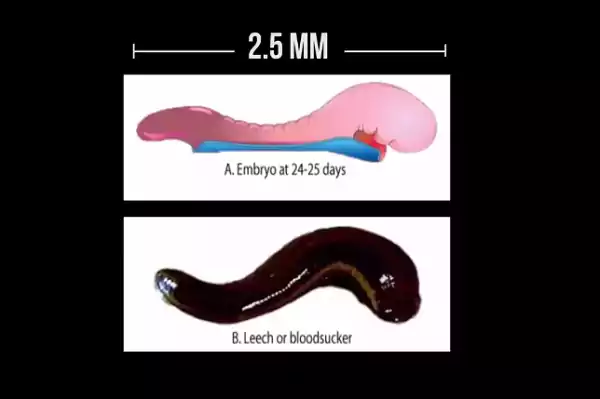
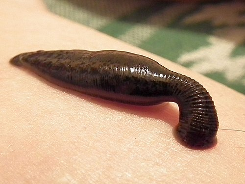
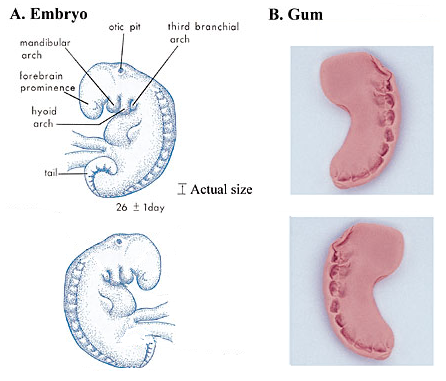
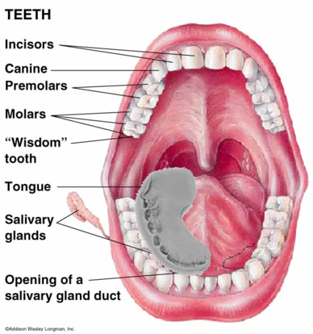

Quranic Numerics · Human Embryology
Exercise 1 of 3
What does the Arabic word عَلَقَةً (Alaqa) mean and why does it precisely describe the embryo at days 23–24?
Exercise 2 of 3
Explore both microscope-confirmed descriptions the leech stage and the chewed stage.




Exercise 3 of 3
At week 6, the embryo's developing vertebrae create a surface that looks like something chewed. What is the Arabic word for this stage, and what does it literally mean?
| Milestone | Date |
|---|---|
| Quran 23:14 revealed | ~610 CE |
| First compound microscope invented | ~1590 CE |
| Human embryology established as a science | 19th century |
| Alaqa (leech) and Mudgha (chewed) descriptions confirmed by microscopy | 20th century |
| Gap between Quran and confirmation | ~1,400 years |